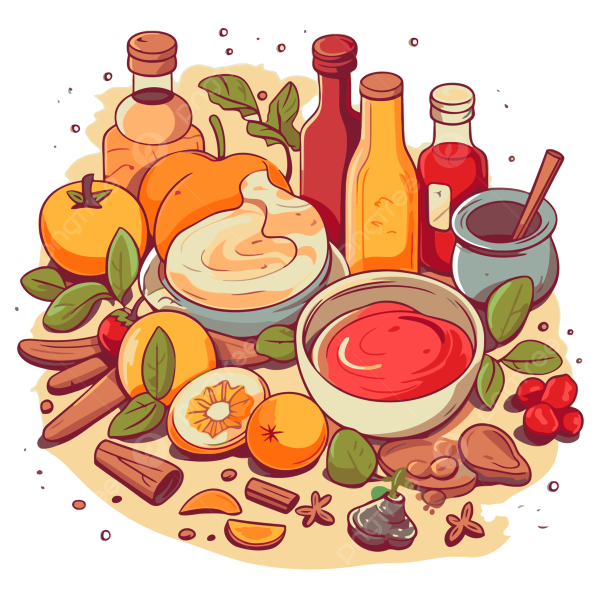
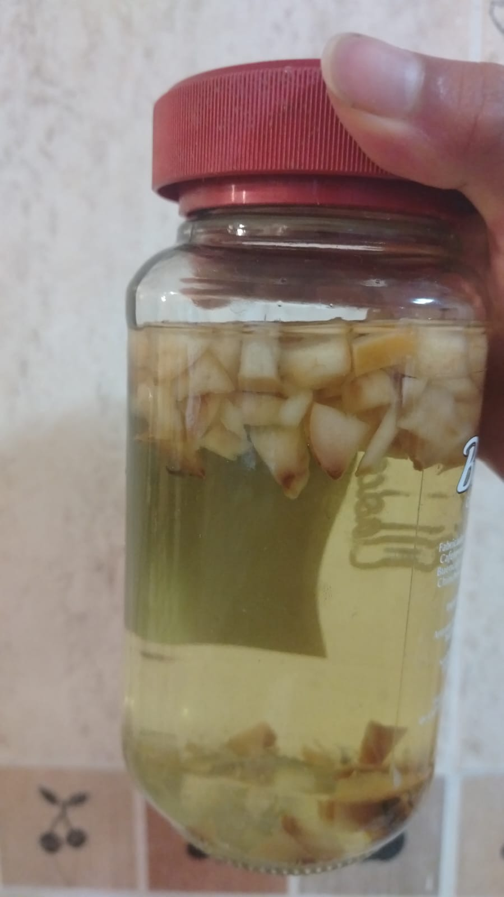
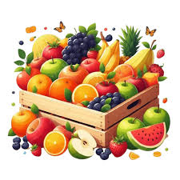
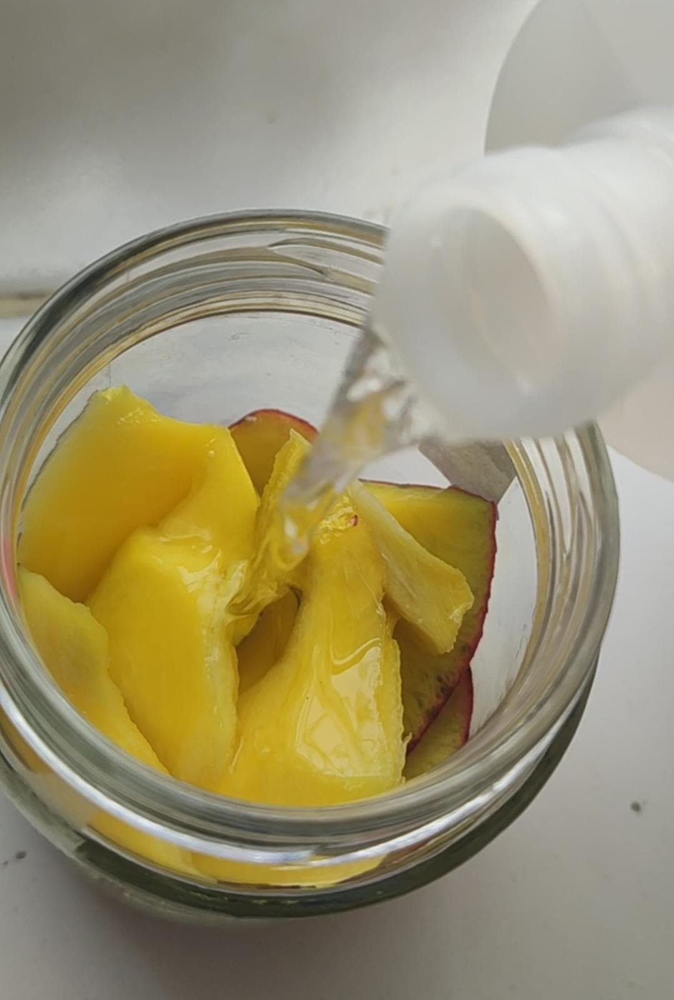
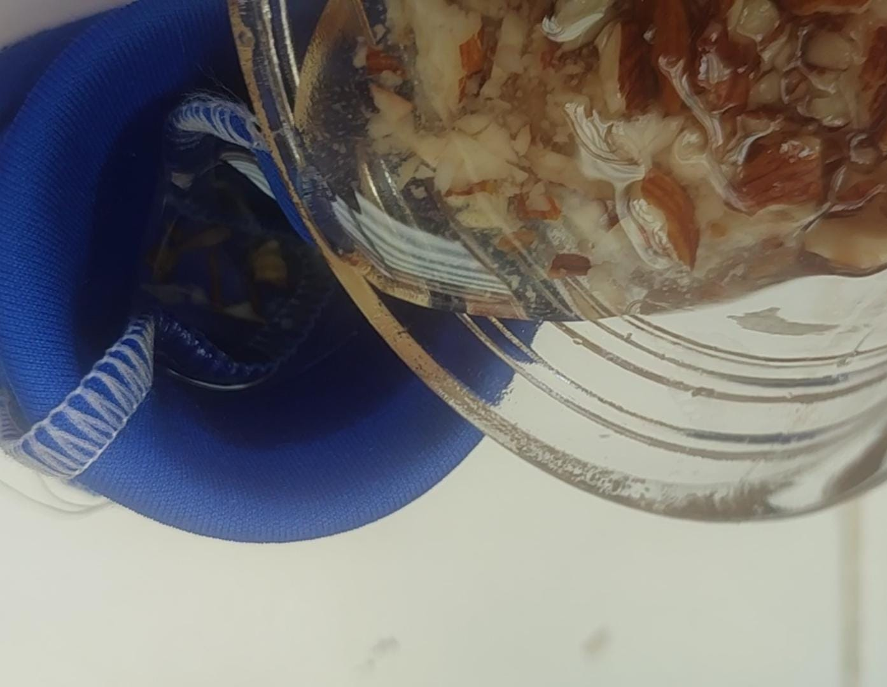
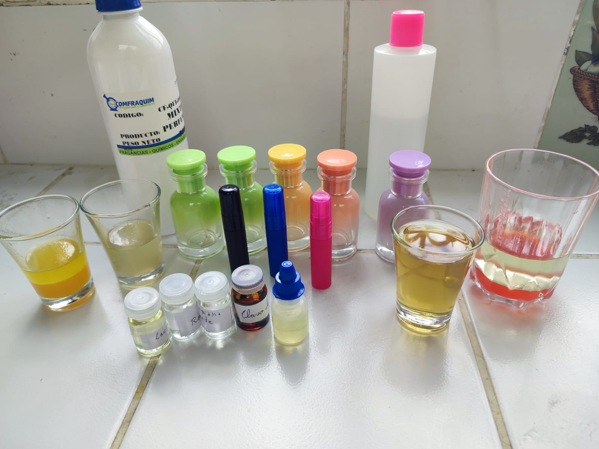
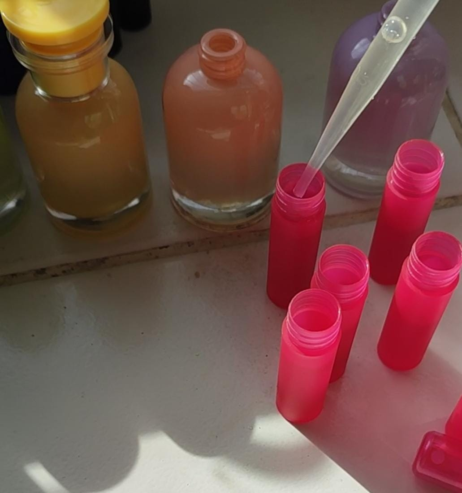

Perfumes artesanales hechos con ingredientes naturales, ciencia y mucha pasión.
Hemos creado 5 perfumes en total, 2 para hombres, 2 para mujer y 1 neutro
En nuestro proyecto buscamos utilizar los ingredientes de la mejor calidad posible, entre ellos están:Mango: fruta tropical, usada en el perfume de mujer, aporta un olor dulce pero sutilMaracuyá: aporta un aroma ácido y dulce al perfumeFresas: su olor es dulce y juvenil, perfecto para un perfume femieninoClavo de olor y canela: tienen aromas intensos, dando potencia al perfumeRomero, laurel, manzana verde: sus aromas aportan notas herbales a las fragancias


Para lograr conseguir nuestros perfumes seguimos los siguientes pasos1. Seleccionamos los ingredientes, sobre todo para las frutas intentamos escoger las más frescas y que tengan buen olor

2. Maceración: para extraer las esencias lo hicimos directamente en alcoholo en aceites vegetales

3. Filtrado y reposo: filtramos las esencias y dejamos reposar por unas horas para eliminar cualquier olor fermentado

4. Mezcla y pruebas: hicimos unas pequeñas pruebas de los perfumes antes de envasar

5. Envasado: finalmente colocamos la fragancia lista del perfume en frascos de 30 ml y 5 ml y decoramos

Sobre el proyecto
Integrantes: Katherine Saltos, David Recalde y Nicolás AcostaInstitución: Unidad Educativa Particula Borja 3 CavanisCurso: 2° BGU "A"Profesores: Diego Arteaga y Josselin AnrangoMaterias involucradas: física, química, emprendimiento y lenguaje AromaCraf demuestra cómo la química y la física pueden usarse para crear perfumes únicos y artesanales. Este proyecto combina ciencia y creatividad, logrando fragancias naturales hechas con dedicación y conocimiento.